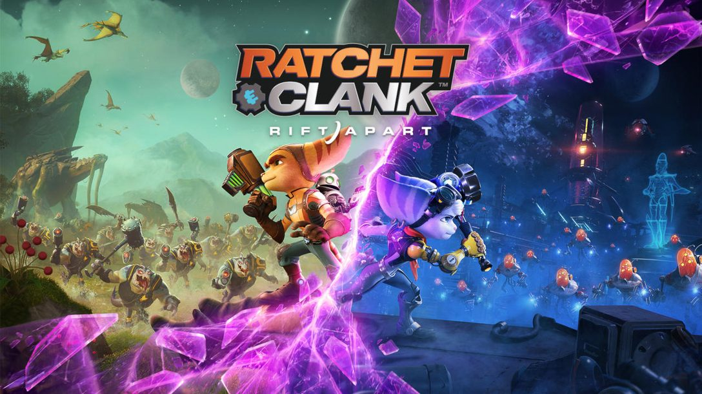
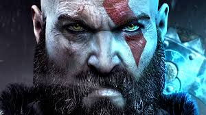

Lanzamientos más esperados del 2021

En este artículo recopilaremos los lanzamientos más esperados por la comunidad del gaming en este año de 2021, que promete ser un año de grandes juegos y con propuestas interesantes, que nos mantendrán pegados frente a la consola o al PC. Este año se presenta realmente prometedor, con grandes lanzamientos en todos los formatos y la llegada de la nueva generación.
Siempre que empieza un año en el mundo de videojuegos es fácil ilusionarse con los meses venideros y los esperados proyectos que se avecinan, y es normal encontrar situaciones en la que los aficionados señalan un cierto periodo como una locura de lanzamientos, generalmente cuando coinciden en poco tiempo dos o tres proyectos de alto calibre. Esta industria se mueve especialmente a base de anticipación, más que ninguna otra: los desarrollos son largos y tanto para los grandes lanzamientos como para las producciones más pequeñas, el número de reservas y la cantidad de iteraciones en listas de deseos constituyen el tronco de la salud financiera de muchas casas, por lo que profesionales y aficionados se retroalimentan en este ciclo. También es importante recalcar que tomaremos en cuenta lanzamientos para todas las consolas, recapitulando tanto la nueva generación que es PS5 Y Xbox series X y la antigua generación que sigue vigente con PS4, Xbox one y Nintendo Switch.

Halo Infinite, desarrollado por 343 Industries y editado por Xbox Studios para PC, Xbox One y Xbox Series, es la sexta entrega de la saga principal de acción en primera persona Halo, la que promete ser la aventura más grande del Jefe Maestro. Halo Infinite continúa la historia de Halo 5: Guardians y dirige a la franquicia hacia direcciones ambiciosas e inesperadas, impulsada por el nuevo motor Slipspace. 343 Industries confirma que todo el contenido que tendrá Halo Infinite de lanzamiento ya está dentro. Lo juegan a diario y se centran en pulir todo.
Halo Infinite, que llegará al final de 2021 a Xbox Series X|S, Xbox One y PC, ha compartido nuevos detalles sobre la situación actual del desarrollo. Lo hace como parte de su nueva política de comunicación, que ahora seguirá un ritmo de actualización pública mensual. Más allá de las posibilidades de personalización del esquema de control, 343 Industries confirma que su contenido de lanzamiento ya está completo: actualmente se centran en pulirlo lo máximo posible.
Antecedentes e historia de la franquicia
2.-Horizon Zero Dawn: Forbidden West

Horizon Forbidden West, también conocido como Horizon Zero Dawn 2 , ha sido anunciado oficialmente para PS5 en el evento PS5 Future of Gaming por el desarrollador Guerrilla Games.
La secuela del juego de rol de acción de mundo abierto se anunció a través de un nuevo avance en la exhibición digital, y confirma que Aloy volverá una vez más como su protagonista central, y esta vez se dirigirá a San Francisco postapocalíptico.
El Horizon Zero Dawn original se lanzó para PS4 en 2017 y tiene lugar en una Tierra postapocalíptica donde los dinosaurios mecánicos acechan las tierras y la humanidad ha vuelto a sus raíces tribales. Dado que fue un gran éxito comercial y crítico para Guerrilla Games, y uno de los mejores juegos de PS4 de todos los tiempos, no sorprende que esta secuela haya sido anunciada como uno de los próximos juegos de PS5 revelados hoy, exclusivo para la plataforma de próxima generación de Sony. Los rumores anteriores sugirieron que Guerilla tiene planes ambiciosos para la franquicia Horizon, con este nuevo título solo uno de varios proyectos en proceso en el estudio holandés.
Antecedentes e historia de la franquicia
3.-Resident Evil: Village

El nuevo Resident Evil Village nos ha dejado muchas cosas -sí, más que Lady Dimitrescu- que esperar de cara a jugar al nuevo título de la saga. Como por ejemplo el regreso de Ethan Winters como personaje jugable y protagonista, aunque si estabas pensando en cómo encajaría el personaje de Winters y sobre la decisión de traerlo de vuelta, Capcom tiene algo que decir al respecto.
Dado que Village se trata de una continuación de Resident Evil 7 -eso dice ya mucho-, algunos fans han querido saber la razón por la cual el personaje de Ethan Winters regresa al juego junto a su esposa. Además, el personaje ha estado envuelto en un halo de misterio desde lo que pasaba en RE7, su vuelta ha sido una sorpresa para los jugadores más longevos.El que se hayan quedado atados a Ethan tiene sentido, la comunidad parecía reaccionar muy bien a él como personaje, de modo que verlo de nuevo al frente de la historia fue bien recibido. Eso, añadido al hecho de que Resident Evil 7 fuera un éxito, ayudó bastante a su regreso.
Antecedentes e historia de la franquicia
4.-Ratchet and Clank Rift Apart

Tras el anuncio de PS5 el año pasado, uno de los juegos que más expectación creó fue la nueva entrega de la saga Ratchet & Clank. Insomniac Games mostró un espectacular tráiler gameplay que nos dejó a todos con la boca abierta.
En esta ocasión, la extraña pareja tendrá que detener, una vez más, al Doctor Nefarious, un emperador robótico que intenta conquistar mundos interdimensionales, siendo el universo de Ratchet y Clank el siguiente objetivo del villano. En uno de estos viajes entre realidades, la pareja se separará, encontrándose Clank con la misteriosa Lombax femenina.
Hace unos meses, el equipo de desarrollo desveló que la obra contará con dos modos de visualización, ya sea a 4K y 30fps o a 60fps; no especificaron la resolución en este último caso. Ratchet & Clank: Rift Apart hará uso de algunas de las funciones específicas de PS5, como las cargas más rápidas gracias al SSD o que cada arma se sienta distinta gracias a los gatillos adaptativos del DualSense.
Antecedentes e historia de la franquicia

Probablemente el juego más esperado de este año debido a la gran calidad de al rebut de la saga en el año de 2018.Tras convertirse en uno de los principales reclamos de PlayStation, la saga God of War vuelve con God of War Ragnarok para PS5 y, con ello, la continuación de la historia de Kratos por parte de Sony Santa Monica.
Con los dioses nórdicos a la cabeza y la presencia de su mitología con personajes como Thor, Kratos y su hijo Atreus seguirán avanzando en un prometedor periplo cargado de acción, monstruos y encarnizadas peleas. Esto es todo lo que sabemos del nuevo God of War Ragnarok para PS5. Fue anunciado el 16 de septiembre de 2020, así que esperarlo antes de que se cumpla un año de su presentación parece una ilusión desmedida. Probablemente no lo veamos asomar por PS5 hasta finales de 2021 o 2022. Con Cory Balrog a la cabeza, desde el lanzamiento de la anterior entrega, pero a mediados de 2019 aún aparecían ofertas de trabajo destinadas a seguir engordando el equipo de desarrollo.
Antecedentes e historia de la franquicia
Hoja de presentación
Diseñado porSergio Contreras Rojas